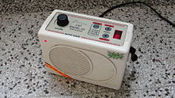

A shruti box (sruti box or surpeti) is an instrument that traditionally works
on a system of bellows. It is similar to a harmonium and is used to provide a
drone in a practice session or concert of Indian classical music. It is used as
an accompaniment to other instruments and notably the flute.
Use of the shruti
box has widened with the cross-cultural influences of world music and new-age
music to provide a drone for many other instruments as well as vocalists.
Adjustable buttons allow tuning. Nowadays, electronic shruti boxes are commonly
used, which are called shruti petti in Tamil and Telugu and sur peti in
Hindi.
Recent versions also allow for changes to be made in the tempo, and the
notes such as Madhyamam, Nishadam to be played in place of the usual three notes
( i.e., Lower shadjam, panchamam, and the upper shadjam ).
History:
Before the arrival of the harmonium in India, musicians used either a tambura or
a specific pitch reference instrument, such as the nadaswaram, to produce the
drone.
Some forms of music such as Yakshagana used the pungi reedpipe as drone.
After the Western small pump harmonium became popular, musicians would modify
the harmonium to automatically produce the reference pitch. Typically, one would
open up the cover and adjust the stop of the harmonium to produce a drone.

Later, a keyless version of the harmonium was invented for the specific purpose
of producing the drone sound.
It was given the name shruti box or sruti box.
These instruments had controls on the top or on the side of the box for
controlling the pitch.
The shruti box is enjoying a renaissance in the West amongst traditional and
contemporary musicians who are using it for a range of different styles. In the
early nineties traditional Irish singer Nóirín Ní Riain brought the shruti box
to Ireland, giving it a minor place in traditional Irish music.
More recently
Scottish folk artist Karine Polwart has championed the instrument, using it on
some of her songs. Singers find it very useful as an accompaniment and
instrumentalists enjoy the drone reference it gives to play along with.